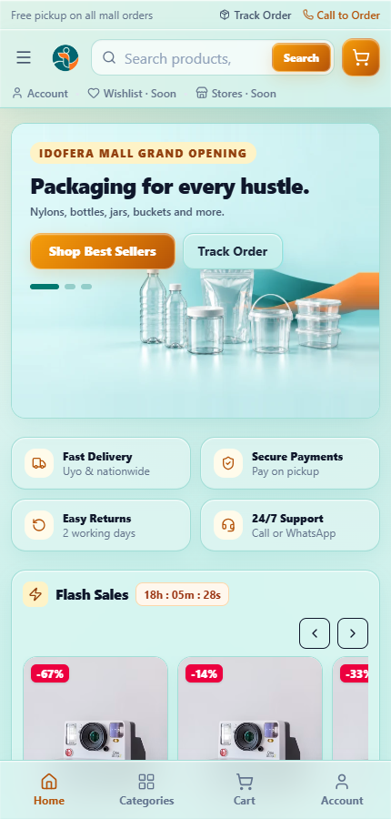
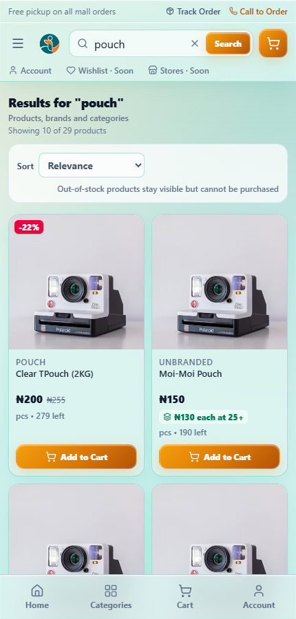
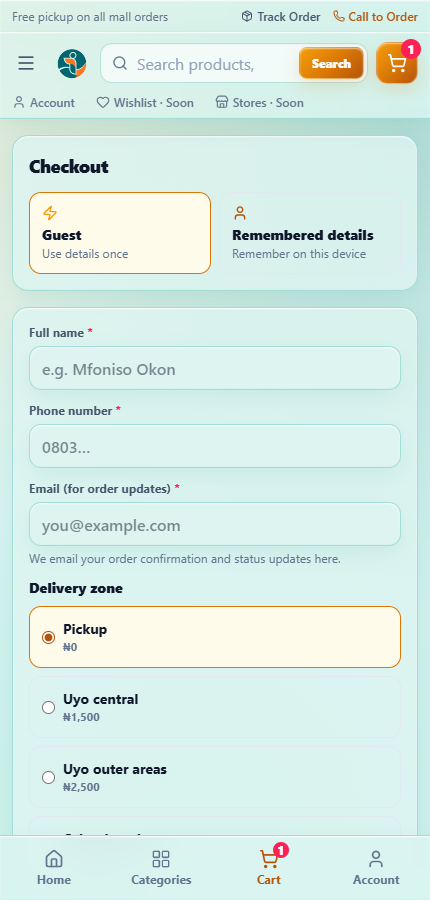
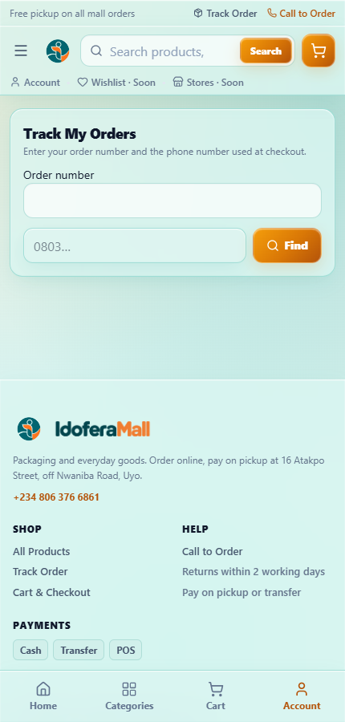

This guide is for customers shopping on the IdoferaMall storefront. It explains how to browse, add items to your cart, check out, pay, and track your order. You can hand it to a customer as-is.
Staff running the shop should read docs/user-help.md instead.
Screenshots below are from a demo storefront; product names and prices are examples.
The storefront is a shop you can browse like any online store. Every product you can buy is Active and in stock — out-of-stock items may still be shown, but they cannot be purchased.

The main areas:
On a phone, the bottom bar gives you Home, Categories, Cart, and Account.

Open the cart to review your items and totals, then continue to checkout, where the Order Summary shows the full breakdown.

The order summary may offer ways to reach a better price:
Lines that have earned a discount are tagged with a Wholesale badge. These offers only appear when there is enough stock to actually reach the tier — you are never promised a price the shop cannot fulfil.
When you are ready, continue to checkout.
The checkout page collects your details and delivery choice. This is also where the Order Summary totals your basket and any wholesale savings.
After ordering you land on a confirmation screen showing your order number with a Copy order number button — keep that number to track your order.
Open Track My Orders (from the confirmation screen, the Track Order link in the footer, or the Account tab on a phone).

Enter:
You must provide both — this is a privacy control, not a full login, so nobody else can look up your order with just one detail. The results show your order's current status and, where available, when it was last updated.
What the statuses mean
| Status | What it means |
|---|---|
| Pending review | We have your order and are checking it |
| Confirmed | Accepted; preparation will start |
| Processing | Being prepared |
| Packed | Packed and ready |
| Ready for pickup | Waiting for you at the shop (pickup orders) |
| Out for delivery | On the way to you (delivery orders) |
| Completed | Finished — collected or delivered |
| Cancelled | Cancelled; if you paid, a refund is arranged |
| Refunded | Money returned |
Choose this if you would rather pay when you collect. Bring your order number.
Do not pay again if you are unsure. A cancelled order must never be paid a second time. Contact the shop first and let them confirm what happened.
If an address cannot be served, the shop will contact you — delivery orders are only confirmed once staff have verified the address is serviceable.
"How do I know my order went through?" You get a confirmation screen with an order number. If you gave an email, you also receive order updates there.
"Where is my order?" Use Track My Orders with your order number and checkout phone number. Staff can also look it up for you.
"Can I buy wholesale / in bulk?" Yes — many products have a wholesale tier. Add enough of the item and the lower per-unit price applies automatically; the cart will prompt you when you are close.
"Why is an item showing but I cannot buy it?" It is out of stock or has no price set. The storefront keeps such products visible, but purchasing is only possible when there is stock and a valid price.
"The page looks empty." Refresh once. If it still does not load, check your connection and try again.
docs/user-help.md and docs/mall-operations.md.